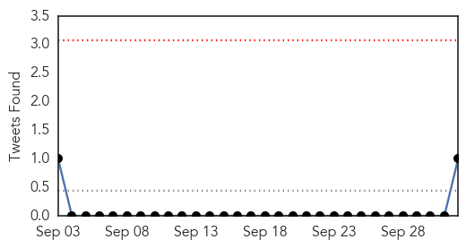

30 Day Trends
Web: 0 alerts, 0 warnings
Twitter: 0 alerts, 0 warnings
Top Articles:
Top Tweets:
- 0.959
- Story-map of Haiti's cholera epidemic: "Mapping Cholera" on. @HaitiJustice
Web/News Articles

Tweets
Article Locations